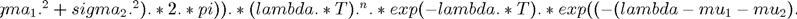
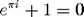

% total costs, objective function% function y=C_t1(x_1,x_2)
C_r=5; T=10; mu_10=10; mu_11=5; mu_20=20; mu_21=10; sigma_10=mu_10*0.4; sigma_11=mu_11*0.4; sigma_20=mu_20*0.4; sigma_21=mu_21*0.4; C_10=100; C_11=200; C_20=50; C_21=100; C_p=2000; D_0=10; r=1; y_1=C_r*T*((1-x_1)*mu_10+x_1*mu_11+(1-x_2)*mu_20+x_2*mu_21);%repair costs% y_2=(1-x_1)*C_10+x_1*C_11+(1-x_2)*C_20+x_2*C_21;%acquisiton costs% sigma_1=sigma_10*(1-x_1)+sigma_11*x_1; sigma_2=sigma_20*(1-x_2)+sigma_21*x_2; mu_1=(1-x_1)*mu_10+x_1*mu_11; mu_2=(1-x_2)*mu_20+x_2*mu_21; % function insideintegral=insideintegral(lambda) % insideintegral=lambda.^n.*exp(-lambda.*T).*exp((-(lambda-mu_1-mu_2).^2)./(2.*(sigma_1.^2+sigma_2.^2))); % end % % e_1=10.^(-100); n=ceil(D_0/r); % y_4=T.^n./(factorial(n).*sqrt((sigma_1.^2+sigma_2.^2).*2.*pi)).*quad(@insideintegral, 0, inf); % y_3=0; % % while (abs(y_3-y_4)>=e_1) % y_3=y_4; % n=n+1; % % % y_4=y_3+T^n/(factorial(n)*sqrt((sigma_1^2+sigma_2^2)*2*pi))*int(lambda^n*exp(-lambda*T)*normpdf(lambda,mu_1+mu_2,sqrt(sigma_1^2+sigma_2^2)),lambda,0,inf)*max(0,n*r-D_0)*C_p; % y_4=y_3+T.^n./(factorial(n).*sqrt((sigma_1.^2+sigma_2.^2).*2.*pi)).*quad(@insideintegral, 0, inf); function ii=yi(lambda)

end function t=in(n) x=0:0.1:40; z=yi(x); t=trapz(x,z); end % i=1; % t(i)=1; % while(t(i)<200) % R2(i)=insideintegral(t(i)); % t(i+1)=t(i)+1; % i=i+1; % end % R2(i)=insideintegral(t(i)); % y_3=trapz(t,R2); % function y=in(n)
Error using C_t1 (line 20) Not enough input arguments.

i=1;
t(i)=0.1;
while(t(i)<200)
R2(i)=yi(t(i));
t(i+1)=t(i)+0.1;
i=i+1;
end
R2(i)=yi(t(i));
y=trapz(t,R2);
end% y_3=0; % y_4=in(n).*max(0,n.*r-D_0).*C_p; y_4=in(n).*(n.*r-D_0).*C_p; while (n<=100) y_3=y_4; n=n+1; y_4=y_3+in(n).*(n.*r-D_0).*C_p; end % y=y_1+y_2+y_4; y=y_4;
end